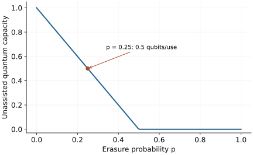

Research question
How much quantum information can noise transmit?
Quantum channel capacity requires both a coding strategy and a converse bound; optimizing one use is not generally enough.
A worked entry into an open research direction · Sources checked 20 October 2026
The question in perspective
A noisy channel can preserve some states well and destroy others. Reliable quantum transmission asks for something stronger: an encoding and decoding that protect arbitrary quantum data, including its entanglement with a reference system. The rate must remain achievable as the number of channel uses grows and the error vanishes.
Define the task before the rate
Let \(\mathcal N\) be a completely positive, trace-preserving map. For \(n\) independent uses, an encoder \(\mathcal E_n\) and decoder \(\mathcal D_n\) aim to transmit a system of dimension \(K_n\). With \(\Phi_{K_n}\) a maximally entangled state of that system and an untouched reference, write the complete encoded channel as \(\Lambda_n=\mathcal D_n\circ\mathcal N^{\otimes n}\circ\mathcal E_n\). Require
\[F_e=\bra{\Phi_{K_n}}(\operatorname{id}\otimes\Lambda_n)(\Phi_{K_n})\ket{\Phi_{K_n}}\longrightarrow1.\]
The unassisted quantum capacity \(Q(\mathcal N)\) is the supremum of achievable asymptotic rates \(\log_2K_n/n\), measured in qubits per use. Shared entanglement and two-way classical assistance define different capacities.
To see why joint coding matters, purify an input \(\rho_A\) as \(\ket\psi_{RA}\), and set \(\omega_{RB}=(\operatorname{id}_R\otimes\mathcal N)(\ket\psi\bra\psi)\). The coherent information is \(I_c(\rho,\mathcal N)=S(B)_\omega-S(RB)_\omega\). For finite-dimensional memoryless channels, the coding theorem states
\[Q(\mathcal N)=\sup_{n\geq1}\frac1n\max_{\rho_{A^n}}I_c(\rho_{A^n},\mathcal N^{\otimes n}).\]
The optimization permits inputs entangled across channel uses. The formula is an operational characterization, not generally a tractable single-use answer.
A qubit erasure channel replaces the input by an orthogonal flag with probability \(p\): \(\mathcal E_p(\rho)=(1-p)\rho\oplus p\ket e\bra e\). For a maximally mixed input, the output entropy is \(h_2(p)+(1-p)\), and the reference–output entropy is \(h_2(p)+p\). Their difference is \(1-2p\). The exact unassisted capacity is
\[Q(\mathcal E_p)=\max\{0,1-2p\}.\]
Evaluating that input alone proves neither optimality nor the converse; those require the channel’s structural properties and a coding argument.

What is established
Erasure-channel capacities give an exact solvable benchmark. Quantum Shannon theory develops achievable rates and converse methods. Smith and Yard’s superactivation construction exhibits two zero-capacity channels whose joint channel has positive capacity. Capacity is therefore not an additive scalar summary of every possible joint use.
What remains unresolved
General channels lack a universal computable single-use capacity expression. For a specified noise family, useful progress may be a better code, a tighter upper bound, or a proof that a regularization is unnecessary in a restricted regime. Correlated noise and finite block lengths require separately stated models.
A concrete next investigation
Reproduce: calculate the erasure-channel entropies and plot the exact capacity. At \(p=0.25\), the unassisted rate is 0.5 qubits per use.
Check: explain why the flagged losses cannot simply be ignored: the environment acquires the erased inputs. Postselection changes the success probability and does not remove its resource cost.
Extend: perturb the erasure model with a stated additional noise process, construct an achievable rate, and compare it with a valid converse. Report the gap rather than presenting a numerical input optimization as an exact capacity.
Selected references
- Capacities of Quantum Erasure Channels
Charles H. Bennett, David P. DiVincenzo, John A. Smolin. 1997. Research paper
Exact erasure-channel capacities, distinguishing assistance models.
- From Classical to Quantum Shannon Theory
Mark M. Wilde. 2011. Textbook manuscript
Coding tasks, coherent information, regularization, and converse bounds.
- Quantum Communication With Zero-Capacity Channels
Graeme Smith, Jon Yard. 2008. Research paper
Superactivation: joint use of two zero-capacity channels can transmit quantum information.
Years refer to first arXiv submission. Publication details are available in the linked records.